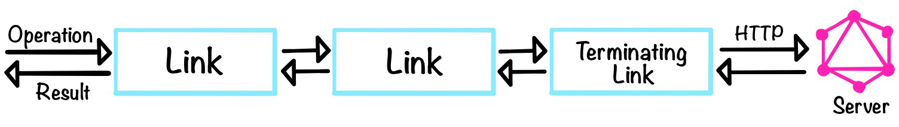

Chapter 10: Real-time Updates with Subscriptions
In this chapter, we will:
- Configure a GraphQL server to support subscription operations
- Add a subscription to the GraphQL API that supports pushing new reviews for a single book to subscribed clients
- Create custom Apollo Links to handle requests to a WebSocket endpoint and authentication errors that are returned responses
- Subscribe to updates from a GraphQL API after an initial query is sent from a client
Support a Subscription for New Reviews
The first nine chapters of this book focused on making requests to a GraphQL API using the query and mutation root operation types. In this concluding chapter, we will finally turn our attention to the third root operation type outlined in the GraphQL specification. Fields queried using the subscription root operation type will allow clients to receive data from the API via long-lived requests that fetch new data as it becomes available on the server.
Specifically, we will create a reviewAdded field on the root Subscription type in the schema to allow Bibliotech’s React application to add new reviews to the applicable book pages in real-time. Unlike the query and mutation operations that are commonly handled using HTTP as a transport mechanism, GraphQL subscription operations are often handled using WebSockets to persist an open connection between the client and server. That means we’ll need to do some additional configuration on the server and client sides to add support for subscriptions. But before we jump into how to add subscription support to a GraphQL API, we should pause to consider why we would choose to support any subscription operations in the first place.
Subscription operations are best used for data that changes frequently and incrementally, and also when keeping that data up-to-date in an interface is essential to user experience. GraphQL subscriptions can be a very convenient tool to reach for to support client application features that have these requirements, but there are important trade-offs to consider. For example, horizontally scaling servers that respond to WebSocket requests will be more complicated than scaling servers that only respond to HTTP requests because these connections are stateful and each client needs to remain bound to a specific instance of the server. Additionally, WebSocket connections may have battery implications for mobile devices. So for less frequent updates, it may be worth considering whether another solution such as periodic polling may provide a better answer instead.
Using a subscription operation to receive real-time book review updates may seem like overkill based on the previous criteria. But for educational purposes, we’ll proceed with adding the reviewAdded subscription so we can see what needs to be wired up in the server and client applications to support this operation (because this would be an awfully short chapter if we didn’t!).
Our first step will be to install some packages that will help us handle WebSocket connections and subscription operations on the server. Historically, the subscriptions-transport-ws package has been the go-to option for setting up subscriptions directly with Apollo Server 2.x. However, that package is no longer maintained and subscription support in Apollo Server 3 will likely work quite differently when it eventually lands, so we will opt for using the graphql-ws library instead. We can use this package alongside Apollo Server Express, so from the client’s perspective, the experience of consuming data via the subscription root operation type will be similar to using Apollo Server’s built-in subscription support. Let’s install graphql-ws in the server directory now, as well as a WebSocket library for Node.js called ws:
npm i graphql-ws@4.3.1 ws@7.4.4
Next, we’ll update the imports at the top of the main index.js file in server/src:
server/src/index.js
import http from "http";
import { ApolloServer, makeExecutableSchema } from "apollo-server-express";
import { applyMiddleware } from "graphql-middleware";
import { useServer } from "graphql-ws/lib/use/ws";
import cors from "cors";
import express from "express";
import expressJwt from "express-jwt";
import ws from "ws";
// ...
Note that we import the http module from Node.js because we need access to the HTTP server powering the GraphQL API directly now, rather than allowing Express to create this server instance under the hood for us. To do that, instead of calling app.listen at the bottom of the file we’ll call http.createServer and pass the Express app into it. Then we’ll call the listen method on the httpServer object and create the WebSocket server at /graphql in its callback first and then call the useServer function from graphql-ws, passing it the executable schema and the new wsObject:
server/src/index.js
// ...
server.applyMiddleware({ app, cors: false });
const httpServer = http.createServer(app);
httpServer.listen(port, () => {
const wsServer = new ws.Server({ server: httpServer, path: "/graphql" });
useServer({ schema: schemaWithPermissions }, wsServer);
console.log(
`Server ready at http://localhost:${port}${server.graphqlPath}`
);
console.log(
`Subscriptions ready at ws://localhost:${port}${wsServer.options.path}`
);
});
For subscription operations, the JsonServerApi data source won’t be added to the resolver context automatically, so we’ll need to use the context option in the object argument passed into useServer to manually set this data source on the context:
server/src/index.js
// ...
httpServer.listen(port, () => {
const wsServer = new ws.Server({ server: httpServer, path: "/graphql" });
useServer(
{
schema: schemaWithPermissions,
context: ctx => {
const jsonServerApi = new JsonServerApi();
jsonServerApi.initialize({ context: ctx, cache: undefined });
return { dataSources: { jsonServerApi } };
}
},
wsServer
);
// ...
});
Behind the scenes, GraphQL subscriptions are typically supported by some kind of pub/sub mechanism so that relevant subscription-related messages may be published at various points during runtime (often in a mutation resolver) and then received by subscription resolvers. There’s no built-in pub/sub feature in Apollo Server or graphql-ws, so we’ll need to install another package for that as well:
npm i graphql-subscriptions@1.2.1
This library will provide us with a basic, in-memory pub/sub implementation that will work well for development purposes. In production, however, we’d likely want to upgrade to a more advanced pub/sub solution that uses the PubSubEngine abstract class bundled in this package. Now we’re ready to add the Subscription type with a reviewAdded field to our type definitions:
server/src/graphql/typeDefs.js
import { gql } from "apollo-server-express";
const typeDefs = gql`
# ...
type Subscription {
reviewAdded(bookId: ID!): Review
}
`;
export default typeDefs;
We add the bookId as a field argument above because when a new review is added we want to make sure any user viewing a book page only receives updates about new reviews for that specific book (rather than every single book in the Bibliotech catalog).
Next, we’ll instantiate a new PubSub object in resolvers.js and also create a constant for a REVIEW_ADDED topic that we will use to capture all messages related to new reviews:
server/src/graphql/resolvers.js
import { PubSub } from "graphql-subscriptions";
import DateTimeType from "./scalars/DateTimeType.js";
import RatingType from "./scalars/RatingType.js";
const pubsub = new PubSub();
const REVIEW_ADDED = "REVIEW_ADDED";
// ...
Whenever a new review is added, we’ll publish a message to the REVIEW_ADDED topic with a payload that contains the review data. To do that, we’ll call the publish method on the pubsub object we previously instantiated, passing it the topic name and the review payload:
server/src/graphql/resolvers.js
// ...
const resolvers = {
// ...
Mutation: {
// ...
async createReview(root, { input }, { dataSources }, info) {
const review = await dataSources.jsonServerApi.createReview(input);
pubsub.publish(REVIEW_ADDED, { reviewAdded: review });
return review;
},
// ...
}
};
export default resolvers;
Next, we must add a resolver for the reviewAdded field. This resolver will call the asyncIterator method on the same pubsub object and pass this method the constant for the REVIEW_ADDED topic so it knows what topic is should listen to:
server/src/graphql/resolvers.js
// ...
const resolvers = {
// ...
Mutation: {
// ...
},
Subscription: {
reviewAdded: {
subscribe(root, args, context, info) {
return pubsub.asyncIterator([REVIEW_ADDED]);
}
}
}
};
export default resolvers;
Before moving on, let’s pause and consider what the above code does. Whenever a message about any new review is posted to the REVIEW_ADDED topic, this data will be pushed down to subscribed clients. However, we only want to send updates to clients if the review belongs to the book that they are currently viewing. To tame this potential firehose, we can use the withFilter function provided by graphql-subscriptions to set a criterion for what review updates will be shared with a given subscribed client. Here, this filter will be set based on the bookId value provided in the operation document initially sent by the client. The withFilter function takes the resolver function we previously defined as the first argument, and as a second argument, it takes a function that returns a boolean to indicate if the published message applies to the subscribed client:
server/src/graphql/resolvers.js
import { PubSub, withFilter } from "graphql-subscriptions";
// ...
const resolvers = {
// ...
Subscription: {
reviewAdded: {
subscribe: withFilter(
(root, args, context, info) => {
return pubsub.asyncIterator([REVIEW_ADDED]);
},
(payload, variables, context, info) => {
return payload.reviewAdded.bookId === parseInt(variables.bookId);
}
)
}
}
};
export default resolvers;
With this code in place, our React application will now be able to send a subscription operation for new reviews to the Bibliotech GraphQL API.
Connect to the WebSocket Endpoint with Apollo Link
Jumping back over to the client side, we also have some additional configuration to do to be able to send subscription operations including the reviewAdded field to the new WebSocket-powered endpoint. When we originally configured Apollo Client in Chapter 8 we instantiated an HttpLink and set that link as the link option in the ApolloClient constructor. While it may have seemed that there wouldn’t be much else for us to do with the link property beyond that, in reality, it enables a very powerful feature of Apollo Client called Apollo Links. So to send requests to the WebSocket endpoint, we’ll need to use a custom Apollo Link.
Apollo Links allow us to modify the way we send requests to a GraphQL API. The most important thing to know about Apollo Links is that they allow us to chain together the units of work we want to perform before getting the result of a GraphQL operation. These units of work can be composed together so that the first “link” in the chain operates on the original GraphQL operation object and the links that follow work on the output of the link that precedes it.
The last link in the composed chain will be a terminating link, and for our purposes, this link will send a network request to the server to fetch a result for the GraphQL operation. This is what the HttpLink currently does for us:

Note that a terminating link doesn’t necessarily need to fetch data from a server if there is some other way to obtain the desired execution result. A standard Apollo Client set-up will use the HttpLink because it creates the typical terminating link for fetching data from a GraphQL endpoint over an HTTP connection. To allow a client application to send subscription operations to the WebSocket endpoint, we will need to create a terminating link for this purpose too and then conditionally send requests to the API depending on what kind of root operation type the operation document contains. To do that, we can use the createClient function provided in the same graphql-ws library that we used on the server. Let’s install graphql-ws in the client directory now:
npm i graphql-ws@4.3.2
The graphql-ws documentation provides a template for creating an Apollo Link using the createClient function, so we’ll create a new links directory in client/src/graphql and copy and past that template into a new WebSocketLink.js file in there:
client/src/graphql/links/WebSocketLink.js
import { ApolloLink, Observable } from "@apollo/client";
import { createClient } from "graphql-ws";
import { print } from "graphql";
class WebSocketLink extends ApolloLink {
constructor(options) {
super();
this.client = createClient(options);
}
request(operation) {
return new Observable(sink => {
return this.client.subscribe(
{ ...operation, query: print(operation.query) },
{
next: sink.next.bind(sink),
complete: sink.complete.bind(sink),
error: err => {
if (err instanceof Error) {
return sink.error(err);
}
if (err instanceof CloseEvent) {
return sink.error(
new Error(
`Socket closed with event ${err.code} ${err.reason || ""}`
)
);
}
return sink.error(
new Error(err.map(({ message }) => message).join(", "))
);
}
}
);
});
}
}
export default WebSocketLink;
When we create a WebSocketLink using this class, we will need to provide an url property in the object passed into it as an argument. The value or the url property will be retrieved from a new REACT_APP_SUBSCRIPTIONS_ENDPOINT variable that we’ll create in the client’s .env file:
client/.env
REACT_APP_GRAPHQL_ENDPOINT=http://localhost:3000/graphql
REACT_APP_SUBSCRIPTIONS_ENDPOINT=ws://localhost:3000/graphql
To use the Create React App proxy to establish a WebSocket connection, we’ll need a more advanced proxy configuration than what we currently have in the client’s package.json file. To configure the proxy manually, we’ll first remove the "proxy": "http://localhost:4000" line from the client’s package.json file and then install this package in the client directory:
npm i http-proxy-middleware@1.1.0
To get direct access to the Express app that powers Create React App’s development server so that we can add custom proxy middleware, we’ll create a setupProxy.js file in client/src with the following code:
client/src/setupProxy.js
const { createProxyMiddleware } = require("http-proxy-middleware");
const target = "http://localhost:4000";
module.exports = function (app) {
app.use(
"/graphql",
createProxyMiddleware("/graphql", { target, ws: true })
);
};
You can read more about proxy configurations in the Create React App documentation.
We don’t need to import the setupProxy.js file anywhere because it will be registered automatically when the React application’s development server starts. Now we’re ready to set up a WebSocketLink for Apollo Client. We’ll begin by importing that class at the top of the apollo.js file and then instantiating a new WebSocket-powered link and setting it as the wsLink variable. Similarly, we will now declare an httpLink variable and set its value as an instantiated HttpLink object instead of doing this directly in the object passed into the ApolloClient constructor:
client/src/graphql/apollo.js
import { ApolloClient, HttpLink, InMemoryCache } from "@apollo/client";
import typePolicies from "./typePolicies";
import WebSocketLink from "./links/WebSocketLink";
const httpLink = new HttpLink({
uri: process.env.REACT_APP_GRAPHQL_ENDPOINT
});
const wsLink = new WebSocketLink({
url: process.env.REACT_APP_SUBSCRIPTIONS_ENDPOINT
});
// ...
We now have two different terminating links at our disposal, but we can only use one at a time at the end of an Apollo Link chain. To get around this constraint, we can use the split function provided by Apollo Client. The first argument to this function is a function that must return true or false and that takes the operation object as a parameter. The second argument is the link to use if the previous function returns true. The final (optional) argument is the link to use if the function returns false. For our purposes, we will write a test function to check if the root operation type is a subscription and use the wsLink if it is, otherwise, the httpLink will be used. We’ll also need the help of the getMainDefinition utility function from Apollo Client to get the query definition in the test function:
client/src/graphql/apollo.js
import { ApolloClient, HttpLink, InMemoryCache, split } from "@apollo/client";
import { getMainDefinition } from "@apollo/client/utilities";
// ...
const link = split(
({ query }) => {
const definition = getMainDefinition(query);
return (
definition.kind === "OperationDefinition" &&
definition.operation === "subscription"
);
},
wsLink,
httpLink
);
const client = new ApolloClient({
cache: new InMemoryCache({ typePolicies }),
connectToDevTools: process.env.NODE_ENV === "development",
link
});
export default client;
With this code in place, Apollo Client is now equipped to send subscription operations to the provided WebSocket endpoint while continuing to send query and mutation operations to the HTTP endpoint.
Optional: Add an Apollo Link to Handle Expired JWTs
Now that we have a deeper understanding of how Apollo Link works, we can add another link to the chain before the terminating link that will enhance the error-handling experience when a user triggers an action that requires authentication after their JWT has expired. This link will first check if any errors were received in the response, then check if one of those errors was a Not Authorised! error from GraphQL Shield, then check if the user’s JWT has passed its expiration time, and finally redirect the user back to the /login route using history.push if they need to re-authenticate.
When we create the custom error link, we won’t be able to access the history object using the useHistory hook because we can only call hooks inside of React components or other hooks. To get around this limitation, we can install the history library to create a custom history object to use instead of the one that’s automatically available with React Router’s BrowserRouter. We’ll begin by installing the package in the client directory:
npm i history@4.10.1
In client/src/router/index.js, we can now create and export the custom history object:
client/src/router/index.js
import { createBrowserHistory } from "history";
// ...
export const history = createBrowserHistory();
// ...
Next, we’ll update the main index.js file for the client so that the router imports and uses the new history object. Because we can’t use a custom history object with the BrowserRouter, we’ll have to use the generic Router component from React Router instead now:
client/src/index.js
import { ApolloProvider } from "@apollo/client";
import { Router } from "react-router-dom";
import ReactDOM from "react-dom";
import { AuthProvider } from "./context/AuthContext";
import { history, Routes } from "./router";
import client from "./graphql/apollo";
import "./index.css";
function App() {
return (
<ApolloProvider client={client}>
<AuthProvider>
<Router history={history}>
<Routes />
</Router>
</AuthProvider>
</ApolloProvider>
);
}
ReactDOM.render(<App />, document.getElementById("root"));
Now we can add a new link to handle API errors resulting from expired JWTs. Apollo Client has a built-in onError link that we can use to intercept both GraphQL and network errors in a response to do custom handling. To use this link, we’ll add an authErrorLink.js file in the client/src/graphql/links directory that we created in the last section and import onError from Apollo Client. Then we’ll set up the callback passed into the onError link to check for a GraphQL error with a Not Authorised! message, and if that error is present, we’ll check for an expired JWT, and then redirect the user to the /login route if needed:
client/src/graphql/links/authErrorLink.js
import { onError } from "@apollo/client/link/error";
import { history } from "../../router";
const authErrorLink = onError(({ graphQLErrors }) => {
if (graphQLErrors) {
const notAuthorizedError = graphQLErrors.find(
error => error.message === "Not Authorised!"
);
if (notAuthorizedError) {
const expiresAt = localStorage.getItem("token_expires_at");
const isAuthenticated = expiresAt
? new Date().getTime() < expiresAt
: false;
if (!isAuthenticated) {
history.push("/login");
}
}
}
});
export default authErrorLink;
Lastly, we can insert the new error link before the terminating link by concatenating the httpLink onto the authErrorLink by calling the concat method on the link object:
client/src/graphql/apollo.js
// ...
import authErrorLink from "./links/authErrorLink";
// ...
const link = split(
({ query }) => {
const definition = getMainDefinition(query);
return (
definition.kind === "OperationDefinition" &&
definition.operation === "subscription"
);
},
wsLink,
authErrorLink.concat(httpLink)
);
// ...
Note that we don’t need to concatenate the authErrorLink and the wsLink together because no protected fields are queryable through the subscription root operation type. To test out the new link, try temporarily shortening the expiration time of the JWT created in the login method in the JsonServerApi data source to be a few seconds, then try sending a mutation from the React application user interface after the JWT has expired, and confirm that the user is redirected to the login page.
Add a Subscription Operation to the Client
Now that our GraphQL API has a Subscription type with a reviewAdded field, we have a pub/sub implementation in place, and our client is capable of sending subscription operations to the WebSocket endpoint, we can finally update the Book page component to use a subscription for new reviews. Let’s create a new subscriptions.js file in client/src/graphql to house all of our subscriptions operations and then add the following code to that file:
client/src/graphql/subscriptions.js
import { gql } from "@apollo/client";
import { fullReview } from "./fragments";
export const ReviewAdded = gql`
subscription ReviewAdded($bookId: ID!) {
reviewAdded(bookId: $bookId) {
...fullReview
}
}
${fullReview}
`;
There are two different ways that we can use this subscription operation with Apollo Client. The first is to use the useSubscription hook to initiate the connection with the server. The second is to use the subscribeToMore function returned from a query operation (much like the fetchMore function we previously used for pagination). The subscribeToMore function will be the right choice for us because we want to subscribe to new review updates for a book after the initial GetBook operation runs. To set up the subscription, we’ll destructure subscribeToMore from the GetBook query result and call that function in the useEffect hook so that the subscription begins once the component mounts:
client/src/pages/Book/index.js
import { useEffect } from "react";
// ...
// ...
import { ReviewAdded } from "../../graphql/subscriptions";
// ...
function Book() {
// ...
const { data, error, fetchMore, loading, subscribeToMore } = useQuery(
GetBook,
{
variables: { id, reviewsLimit, reviewsPage: 1 },
fetchPolicy: "cache-and-network",
nextFetchPolicy: "cache-first"
}
);
// ...
useEffect(() => {
const unsubscribe = subscribeToMore({
document: ReviewAdded,
variables: { bookId: id }
});
return () => unsubscribe();
});
// ...
}
As we receive new review data from the server, we’ll need to manually update the review list for the book too. To make that happen, we’ll create a updateAddNewReviewToList function in updateQueries.js. This function will take the previous state of the book and the new review object and then merge that review data at the beginning of the list in the reviews field:
client/src/utils/updateQueries.js
// ...
export function updateAddNewReviewToList(previousResult, subscriptionData) {
if (!subscriptionData.data) {
return previousResult;
}
const newReview = subscriptionData.data.reviewAdded;
return {
book: {
...previousResult.book,
reviews: {
__typename: previousResult.book.reviews.__typename,
results: [newReview, ...previousResult.book.reviews.results],
pageInfo: previousResult.book.reviews.pageInfo
}
}
};
}
// ...
Now we’ll import the updateViewerHasInLibrary function into the Book page component file and use it with the updateQuery property passed into the object argument of the subscribeToMore function:
client/src/pages/Book/index.js
// ...
import {
updateAddNewReviewToList,
updateViewerHasInLibrary
} from "../../utils/updateQueries";
// ...
function Book() {
// ...
useEffect(() => {
const unsubscribe = subscribeToMore({
document: ReviewAdded,
variables: { bookId: id },
updateQuery: (previousResult, { subscriptionData }) =>
updateAddNewReviewToList(previousResult, subscriptionData)
});
return () => unsubscribe();
});
let content = null;
// ...
}
With this code in place, try adding a new review in one browser tab with the relevant book page opened in another browser tab. The new review will now be automatically added to the page in real-time and without refreshing.
Summary
Congratulations! You made it to the end of our extensive journey through the inner workings of GraphQL and Apollo. The final chapter covered off how to handle subscription operations on both the server and client sides, which was the only root type operation we hadn’t yet explored. We also saw how an Apollo Link can be used as a powerful tool for processing GraphQL requests before they leave the client as well as the responses that are returned from the server. If you’re eager to continue GraphQL learning journey from here, be sure to check out Appendix A for a curated list of additional resources.